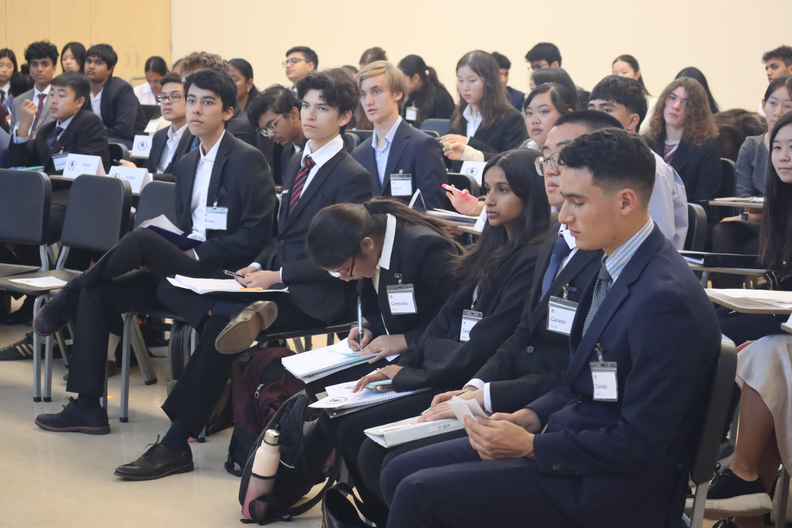

Conference Details.
About GMUNCchevron_right
GMUNC XII will take place at Henry M. Gunn High School on October 11, 2025. It is a smaller event geared towards preparation for local collegiate-run conferences. We offer a variety of different committees including general assemblies and crisis committees. Please be mindful that not all delegates are at are the same level of experience, so we ask that you be respectful and helpful to all delegates. Our campus map can be found here.
Conference Policy
Full refunds are available for delegate fees up until September 20, and late cancellations will come with a 50% refund. Delegate fee refunds will NOT be provided for cancellations after October 4. Delegation fees are non-refundable. Please contact Gunn MUN through email or the contact page to complete the full transaction if a refund is desired. Laptops may be used during committee sessions for writing resolutions, and cell phones are prohibited during committee. Pre-written resolutions and clauses, and plagiarism are strictly prohibited. Delegates may be removed at the descretion of GMUNC staff.
Delegate Participation Formchevron_right
The delegate participation form can be found here. All delegate forms are due at the registration desk on the day of the conference, October 19.
Delegate Emergency Contact + Medical Formchevron_right
The emergency contact and medical form can be found here. All delegate forms are due at the registration desk on the day of the conference, October 19.
Position Paper Requirements
Position papers are required of all delegates that wish to be
considered for committee or research awards. Any delegations
requesting special accommodations must do so by sending an email to
the committee-specific address (found on the committees page and in
the respective background guides).
Position papers must adhere to the following guidelines:
- Maximum of 3 pages
- Times New Roman 12pt font, double-spaced
- 1 inch margins on all sides
- Delegate country/individual, committee name, School Name, and the
text "GMUNC XI" must be present in the header
- Please do not include personal identifiable information (including
actual names) in the paper - given the close proximity of attending
schools as well as the presence of Gunn delegates, anonymity is
paramount to ensure impartiality
- Citations following MLA/APA guidelines are required for all
information that is not common knowledge
- Papers must be submitted in PDF format
- Note: position papers are not required for the ad hoc committee
Position papers should follow this format or similar: topic
background, past UN action, country policy, proposed solutions, and
citations. Please do not feel the need to necessarily fill up three
pages. Papers will be evaluated on the grounds of quality rather than
empirical length. Double delegations should only submit
one paper across both delegates. An example position paper can
be found
here, and a position paper template can be found here.
Please submit your position paper to your committee's email address
which will be included in the committee background guide and in the
committees section of this website.
When submitting a position paper, please title the email as
"[Delegate Name] Position Paper Submission". If titled differently,
keep in mind that the submission may be disregarded and not
considered for any award.
The deadline for the position papers is October 4. Any
submission before the due date is eligible for all awards given out by
the conference. October 10 is the deadline for position papers
in order to be considered for all committee awards except for
research awards.
GMUNC XI Schedule (GMUNC XII Schedule Will Be Similar)
| Time/Block | Block A (ECOSOC, UNDP, 1954 Geneva Convention) | Block B (OCHA, CCPCJ, ICAO) | Block C (UNCLOS, UNHCR, Brexit) |
|---|---|---|---|
| 7:30 | Registration | ||
| 7:45 | |||
| 8:00 | |||
| 8:15 | Opening Ceremony | ||
| 8:30 | |||
| 8:45 | |||
| 9:00 | Session 1 | Session 1 | Session 1 |
| 9:15 | |||
| 9:30 | |||
| 9:45 | |||
| 10:00 | |||
| 10:15 | |||
| 10:30 | |||
| 10:45 | Break | ||
| 11:00 | Session 2 | ||
| 11:15 | Lunch | ||
| 11:30 | |||
| 11:45 | Lunch | ||
| 12:00 | |||
| 12:15 | Session 2 | ||
| 12:30 | |||
| 12:45 | Lunch | Session 2 | |
| 1:00 | |||
| 1:15 | |||
| 1:30 | |||
| 1:45 | Session 3 | ||
| 2:00 | |||
| 2:15 | Break | ||
| 2:30 | Break | Session 3 | |
| 2:45 | Session 3 | ||
| 3:00 | |||
| 3:15 | |||
| 3:30 | |||
| 3:45 | |||
| 4:00 | |||
| 4:15 | |||
| 4:30 | Break | ||
| 4:45 | Closing Ceremony | ||
| 5:00 | |||
| 5:15 | |||
| 5:30 | |||
